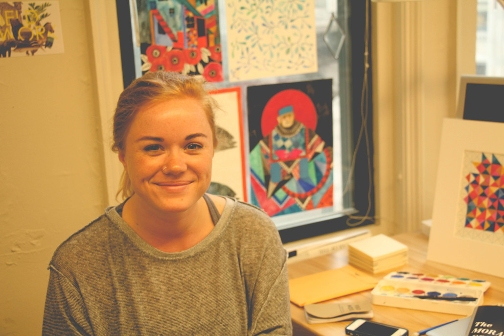

I recently had the privilege of speaking with Megan Jean Pryce, a talented Chicago-based graphic designer. We discussed her latest work in the typography exhibition Typeforce 5, her current works in progress, and the relationship between design, truth, and representation.
Matthew Robinson: Could you tell us what brought you to Chicago?
Megan Pryce: I’m originally from Farmington Hills, Michigan; a suburb of Detroit. However, I’ve been living in Chicago for a good 7 years now. I also did my undergrad at the School of the Art Institute (SAIC) as well.
MR: Ah I see. So you’re well-accustomed to the Chicago vibe.
MP: I am and I do like it. Though I’m getting a little tired of the weather here like everyone else.
MR: So Megan, what has been your medium of choice from the time that you got into art-making and designing?
MP: As an undergraduate I did a lot of Fiber and Materials work which included embroidery and screen printing. I actually started off as a graphic designer, but then decided that it was just too tedious. At that point, I started doing New Media Film and Video, and then went back to Graphic Design my Junior year. Now I’m really into graphic design – it just took some time for me to be comfortable working in this way.
MR: Do you find that your previous interests that still show themselves in your graphic design work?
MP: That was my main reason for coming back to graduate school. I took two years off between undergrad and graduate school, and was working as a designer at Froeter Design, a graphic design firm. [Working there] was great and very rewarding, but I felt that my art practice was completely separated.
MR: So you felt that your creative practice was different than your professional practice?
MP: Right. I had my design practice and my art practice that I would do in the evenings, on the side. I realized that I wanted to incorporate those two elements [of my design practice] more seamlessly.
MR: In your opinion, what is the emphasis here at SAIC’s graphic design program? Is it more of conceptually focused study or is it more ‘utilitarian,’ emphasizing graphic design in specific commercial contexts?
MP: It’s definitely more conceptual. I really like that SAIC is a very conceptual school. Many other programs that I was looking to were more commercially focused. [I also] really appreciate commercial considerations, but I spend a lot of my own time reading and researching about the logistics of design – software, visual cues, hyphenation; the very basics. I think that those are all concepts that you can teach yourself more easily than the conceptual aspects of design.
MR: Let’s talk about some of your influences. I’m especially interested in those in your work for the Typeforce 5 exhibition. I saw that you’re interested in linguistic morphology, semiotics communication, and symbolisms. Did you draw influence from any of those concepts?
MP: In my thinking about what gives items and words meaning and what instills value, I started a project by taking an inventory of all of the objects that I personally own, which proved to be a lot harder than I thought. I don’t consider myself a hoarder or a person with tons of things by any means, but I got into this mode of this obsessive compulsive nature when I started to count. So I was going through [something like] a box of paper clips and I thought “Should I count this as a box of paper clips or do I need to count each individual one; is this one item or several?” So I became really obsessive about it. I’ve been thinking a lot about art collections and why people feel this desire to surround themselves with items of value. What I started to notice when I was organizing was that the value of the objects morphed and changed, especially when I wrote them out in a list form. I wouldn’t write 20 records, I would write the word ‘record’ twenty times instead. In having that repetitive motion the value of the things that I owned really transformed.
MR: Did you find that there was more value instilled in the things that you owned as you were counting, perhaps some sort of hierarchy emerged?
MP: Actually, it really balanced everything out. It created this illusion that everything was on an equal playing field. I started to try and consider why some things were more important to me than others. For example, I have this cuckoo clock that was my grandfather’s that is very sentimental to me, but when I was listing it with things like keys – which are also very important and necessary, that value system again leveled out. So [in the work] I took that toward a literal spin by thinking about the term people use a lot: “What does this object say about me, what does this outfit say about me?” And about how we make purchases and surround ourselves with things as tangible evidence of our personalities. That’s where the linguistics came in. I began using the tangibility of objects as a visual dictionary.
MR: I’m always captivated by morphemes and phonemes and the sounds that construct words. Is that something you’re interested in? Do you have a favorite word?
MP: I don’t know that I have a favorite particular word, but I do find that morphing of language really interesting. With this piece, I started really basic, I started with the basics by looking at the definitions of some of these objects. Some of these words were actually super poetic, and I observed how the phonetic spelling changed my own projection of what the word means.
MR: Is there a strong theme or format that you’re compelled to advance in your work?
MP: Currently, I’m working on this book called The Moral Compasss. It’s written as a fable about nine men and one black cat that are on a ship sailing across the Atlantic Ocean. The book begins with the inevitable: that the boat eventually sinks. Throughout the project, each character projects their own opinion to answer why that was the outcome. They each blame a different character and try to come to terms with the moral lesson that they could have learned from that situation… I wrote it in this way where you’re troubled to align yourself with any particular character because they have these very intricate personalities – which is something that’s often left out in literature where everybody has their place; there’s a clear good guy and a bad guy. I shouldn’t tell the end of the story, but at the end of the story [we] find out that in reality the boat had a leak in it from the beginning. It was inevitable that it was going to sink. Despite everyone’s best or worst intentions, the outcome was the same. Morals are something that I’m interested in. I’m looking toward the reasons why we feel the need to project this… karma.
MR: So there was this reality that was completely removed from the characters’ perceptions…?
MP: Right, and they’re all trying to come to terms with the reality of their lives, what they could have changed or done differently, and that some things you just don’t have control over. The fact that you can’t take something away from a situation is a little ominous.
MR: Can you provide us some insight into your process in your creative design work?
MP: I’m really hands on. I love printmaking, drawing, and watercolor. I consider those aspects of my work with a hobbyist element. I think a lot of artists have this professional practice and when they’re sick of that have a hobby practice, you know? So I do a lot of water color and screen printing on the side. In addition to that, the largest part of my in-school practice is the process of building concepts. Researching and having conversations with people is crucial and beneficial. I don’t like to choose concept over medium or medium over concept – I merge the two elements.
MR: So you’re able to combine and work with form and substance at the same time.
MP: That’s a lot of the theory behind design, that you have to figure out the best solution to the problem. It doesn’t necessarily have anything to do with aesthetic or your own personal projections. At first it has to do with what the best solution is.
MR: Would you say your process becomes a relationship or conversation that evolves over time?
MP: Yeah, certainly. For this project The Moral Compass I wrote the story first, and it’s in a book format for now. But I think that it will definitely evolve. I’m hoping that this will be an MFA show piece. I’m still actively considering the object part of this and whether I want it to be in a book form, whether that’s the best solution for it.
MR: What is the relationship between letters, words, type, and truth?
MP: Man that is such a hard question! I’m studying a concept in class right now called Typographic Modernity. I feel that it’s essentially trying to resolve that question of “what comes first, language or the written word?” It’s hard because when you write something it becomes; it goes from being abstract to tangible – that action of writing is opposed to [words and concepts as] static and unchanging.
MR: My other question is more about the relationship between truth and representation, and the way that you as a designer influence how things are seen and perceived. What do you think that relationship is between the senses, language, and representation? In your opinion, what is your role as a designer in creating a visual culture?
MP: I consider personal reflection to be a huge part of my art practice. Design is the way to transform that reflection into something that other people can relate to. In essence, that’s why I’m so drawn to design. Finding these ways of connecting with people and realizing that we all struggle with the same things and think about the same things is straightforward one of the goals of design. The more people that I meet, especially in the creative world, I sort of realize that there are all of these great connections to be made. I believe that strategic design can collapse boundaries between people.
MR: What’s your take on the different modes of representation that your work could be shown in? Was Typeforce 5 the first time you had your design work shown in a gallery setting?
MP: In the past I’ve mostly shown my work in exhibitions through the school. That was the first time that my work was shown in a specifically design-oriented show, and I thought they did a really great job of curating – it wasn’t that the only commonality was use of text. It was a lot more dynamic. I have been to some design shows where the only thing that the work has in common is that they’re all posters.
MR: Honestly, that is usually the expectation for a ‘type’ show.
MP: It was really fun to be a part of that. It seemed more like a festival of design.
MR: Sometimes I feel that there’s a tendency to separate art and design. We should talk about that tendency as it relates to the boundaries that design breaks down. A lot of what we’re trying to do at Studio Mosaic involves approaching creative communities and starting a dialogue that stays consistent. So Megan, why do you think that that separation between art and design exists?
MP: Well, I think that that’s been a conversation for the past 150 years. People have been [debating this] since the founding of Bauhaus and the beginning of the use of the term design. People have been trying to figure out what design means to the art world. For me, design means creating work that a larger community can consider and appreciate versus just the art community, the people already going to galleries or museums. I think that design helps to broaden the [sense of] community. At least that’s the intention.
Megan Jean Pryce is an artist, designer, and graduate student at the School of the Art Institute. We conversed in a studio space in Downtown Chicago.